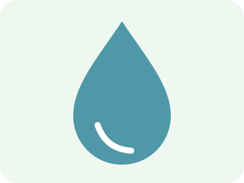

Energia- és víztakarékosság
Energia
- LED-világítás használata.
- Felesleges világítás és készenléti fogyasztás kikapcsolása.
- Ésszerű fűtés és hűtés.
- Energiahatékony készülékek választása.
A hatékony energiahasználat csökkentheti a fogyasztást és a költségeket is.

Víz
- Fogmosás közben zárjuk el a csapot.
- Részesítsük előnyben a rövidebb zuhanyzást.
- Teljes töltettel indítsuk a mosógépet.
- Javítsuk meg a csöpögő csapokat.